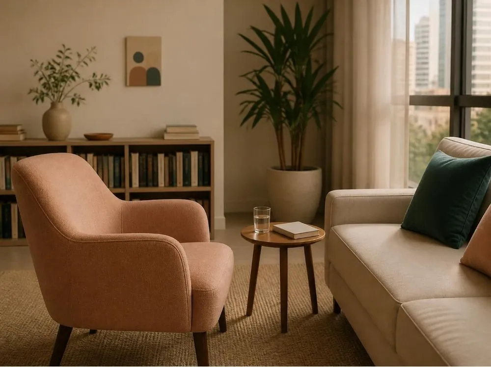

Por videochamada
On-line
A mesma escuta e o mesmo cuidado do consultório, de onde você estiver. Basta um lugar reservado e uma boa conexão.
Informações sobre o on-lineUm espaço de escuta e reflexão sobre sua história, seus sentimentos e suas relações.
Atendimento psicológico on-line e presencial, com respeito ao seu tempo.
Cuidar da saúde emocional é um gesto de respeito à própria história. A terapia é um lugar para pausar, se ouvir e entender o que se passa por dentro.
Cuidar de si também é um caminho.


Sou psicóloga clínica e mestre em Psicologia Clínica. Meu trabalho é fundamentado na psicanálise, uma abordagem que aposta na fala como caminho para o autoconhecimento.
No consultório, recebo cada pessoa com escuta atenta e acolhimento. Não há pressa nem respostas prontas: construímos juntos um espaço seguro para que você possa falar sobre o que sente, o que vive e o que se repete na sua história.
Clara MendesPsicóloga clínica, CRP 06/000000
Conheça minha trajetóriaPsicoterapia individual para adultos, com sessões sigilosas. Você escolhe o formato que funciona para a sua rotina.
A mesma escuta e o mesmo cuidado do consultório, de onde você estiver. Basta um lugar reservado e uma boa conexão.
Informações sobre o on-line
Um encontro em ambiente reservado e acolhedor. O endereço completo é informado no contato.
Informações sobre o presencialNão é preciso chegar com tudo resolvido ou nomeado. Muitas vezes, a terapia começa justamente pelo que ainda não tem nome.
O primeiro passo é simples. Você entra em contato e combinamos tudo com calma.
Pelo WhatsApp, pelo Instagram ou pela página de contato.
Um encontro para nos conhecermos e você contar o que te trouxe.
Frequência e formato são combinados em conjunto, respeitando o seu tempo.
Pelo WhatsApp, pelo Instagram ou pela página de contato. A resposta traz as informações sobre horários e funcionamento do atendimento.
Sim. O que sustenta o processo é a escuta e o vínculo, e eles também acontecem por videochamada. É importante ter um lugar reservado e uma boa conexão.
O endereço completo é informado no contato.
Sim. O sigilo é um dever ético previsto no Código de Ética Profissional do Psicólogo.
Não existe um prazo definido. A frequência e a continuidade são combinadas em conjunto, respeitando o tempo de cada pessoa.
Entre em contato para informações sobre o atendimento on-line e presencial.